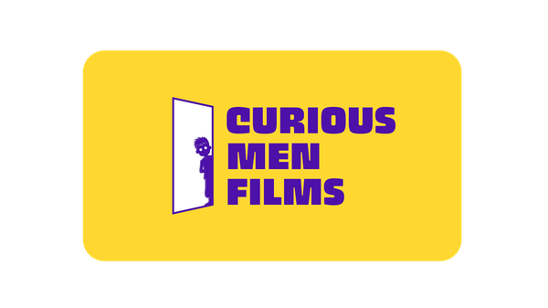

We celebrate
entrepreneurship
through filmmaking.
Cricketers become legends. Film stars become icons. But India's founders — who risk everything to build from nothing — their story goes untold. We're the studio changing that.